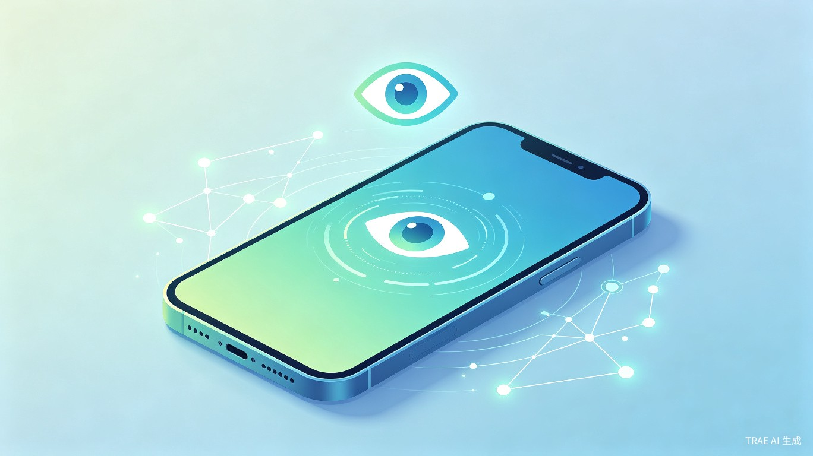
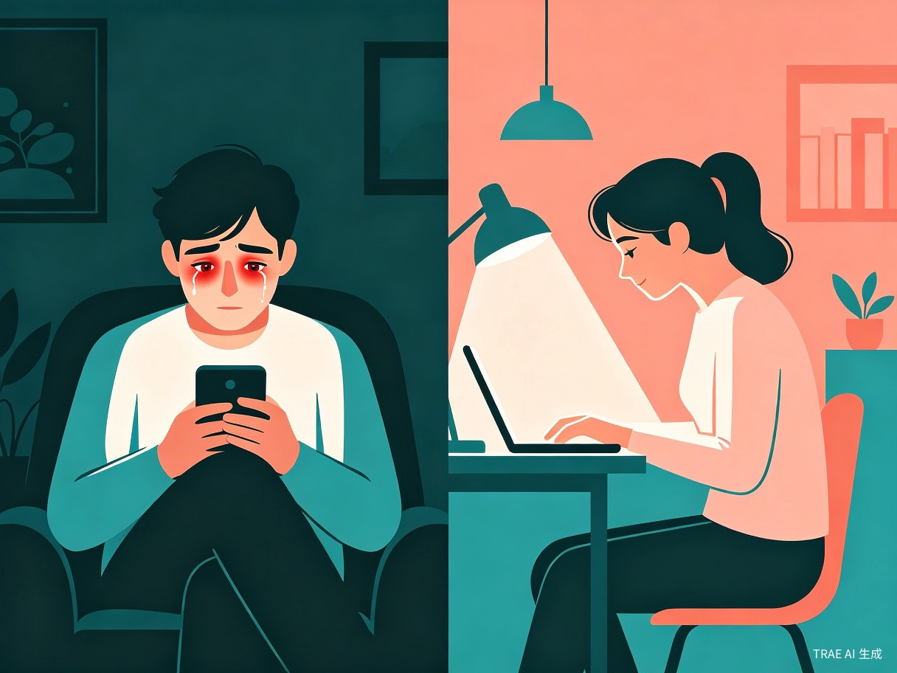
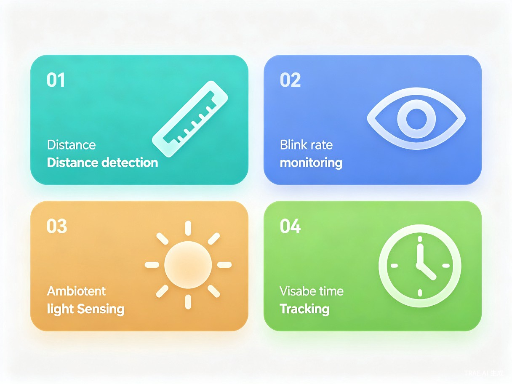

AI护眼宝
基于前置摄像头与端侧AI的智能护眼助手
让每一次屏幕使用，都在守护你的眼睛
创意名称与介绍
AI护眼宝是一款结合AI视觉识别与手机前置摄像头的智能护眼APP，通过实时监测用户的用眼行为，主动干预不良用眼习惯，守护数字时代的眼健康。
核心问题：手机日均使用超5小时，青少年近视率突破70%，干眼症与视疲劳呈爆发式增长。传统护眼方案（定时提醒、屏幕调暗）过于被动，无法针对用户实际用眼姿态做出精准干预。
灵感来源
我观察到身边大量同事、同学在长时间盯屏后频繁揉眼、流泪。而现有的"20-20-20法则"提醒类APP留存率极低——因为它们不了解用户是否真的在看屏幕、是否距离过近、光线是否充足。AI+前置摄像头的组合可以实时感知这些关键信息，让护眼从"被动提醒"进化为"主动守护"。
产品形态
一款移动端APP（iOS/Android），通过前置摄像头实时采集用户面部数据，结合端侧AI模型分析用眼距离、眨眼频率、用眼时长、环境光线等指标，提供个性化的护眼干预方案。

目标用户及痛点
学生群体
中小学生及大学生，近视高发人群，每日在线学习与娱乐时间超过6小时。
知识工作者
程序员、设计师、文字工作者等长时间对屏人群，干眼症患病率超60%。
家长群体
关注孩子眼健康的家长，希望科学监控孩子的用眼习惯，缺乏有效工具。
使用场景
用户在日常手机使用过程中——刷短视频、阅读电子书、在线学习、办公处理、游戏娱乐等场景下，APP在后台静默运行，实时监测用眼状态，在检测到风险行为时弹出轻量级提醒。
核心痛点
- 缺乏实时反馈——用户往往在眼睛已经不舒服时才意识到问题，此时已造成不可逆损伤
- 现有APP功能单一——仅提供定时锁屏或屏幕滤镜，无法识别用户真实的用眼行为（如凑近屏幕、眨眼过少）
- 家长无法有效监控——缺乏数据化的眼健康报告，对孩子的用眼习惯无从了解
- 用户认知模糊——不知道"正确的用眼方式"在自身场景下具体意味着什么

核心功能设计

用眼距离监测
通过前置摄像头面部识别，实时计算人眼与屏幕距离。当距离低于30cm时，APP以渐变色屏幕边框+震动进行提醒，引导用户调整姿势。
眨眼频率追踪
AI模型实时检测眨眼频率，正常值为15-20次/分钟。当频率过低（低于10次/分钟）超过2分钟，触发"眨眼提醒"动画，预防干眼症。
环境光线感知
利用前置摄像头进光量评估环境亮度，在过暗或过亮环境下提醒用户调整光线，避免在黑暗中看手机造成瞳孔持续放大、视疲劳加剧。
智能用眼时长管理
区别于简单的倒计时，AI护眼宝根据用户当前用眼状态（距离、眨眼、光线）动态计算"眼疲劳指数"，在疲劳值达到阈值时才提醒休息，避免无效打扰。
技术实现方案
实时采集
实时推理
综合分析
个性化提醒
技术选型
| 模块 | 技术方案 | 说明 |
|---|---|---|
| 面部关键点检测 | MediaPipe Face Mesh | 468个面部关键点，精确计算瞳距与屏幕距离 |
| 眨眼检测 | EAR（Eye Aspect Ratio）算法 | 基于眼睑开合比例判断眨眼事件 |
| 光线感知 | 摄像头曝光参数 + 亮度直方图 | 无需额外传感器，利用现有硬件 |
| 端侧推理 | TFLite / Core ML | 所有AI计算在本地完成，不上传面部数据 |
| 隐私保护 | 实时处理 + 即时丢弃 | 摄像头画面仅在内存中处理，不保存任何图像 |
隐私优先：AI护眼宝采用端侧计算架构，所有面部识别与数据分析均在用户设备本地完成。摄像头画面仅在内存中实时处理，处理完成后立即丢弃，不上传、不存储任何面部图像，充分保障用户隐私安全。
市场数据与价值分析
商业模式与未来展望
盈利模式
基础版（免费）
实时距离监测、眨眼提醒、光线感知、基础用眼报告。覆盖核心护眼需求，建立用户口碑。
Pro版（订阅制）
深度眼健康周报/月报、AI个性化护眼方案、家长远程监控面板、多设备同步。
B端合作
与学校、教育机构合作部署学生护眼方案；与眼镜品牌、眼科医院进行数据合作与硬件联动。
未来拓展方向
- 硬件联动：与智能台灯、护眼屏幕膜等硬件产品打通，构建"软件+硬件"护眼生态
- AI健康助手：基于长期用眼数据，结合眼科知识库，提供个性化的眼健康管理建议
- 社交激励：引入"护眼打卡"与好友排行机制，提升用户粘性与留存
- 医疗对接：与眼科医疗机构合作，在检测到异常用眼模式时提供专业就医建议
价值与意义
社会价值
中国青少年近视率居全球首位，AI护眼宝通过低成本、无感化的实时监测，在用眼习惯养成的关键阶段提供科学干预，从源头降低近视发生率。长期来看，有助于减轻家庭医疗负担、提升国民整体眼健康水平。
商业价值
护眼健康是千亿级蓝海市场。AI护眼宝采取"基础免费+高级付费"的Freemium模式，同时拓展B端合作——与学校、教育机构、眼镜品牌进行数据合作与硬件联动，构建护眼生态闭环。